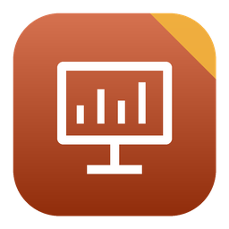

الشرائح
شرائح رئيسية، وأحد عشر تخطيطًا، وسمات، وأقسام، وملاحظات للمقدّم وتعليقات.

العروض التقديمية
شرائح رئيسية، وتخطيطات، وأشكال، ومخططات، وانتقالات وحركات، مع عرض للمقدّم بملء الشاشة وإمكانية التصدير إلى PDF.
FAMILIAR FILES
قراءة PPTX وكتابتها · تصدير PDF وPNG وJPEG وGIF
شرائح رئيسية، وأحد عشر تخطيطًا، وسمات، وأقسام، وملاحظات للمقدّم وتعليقات.
أكثر من 150 شكلًا جاهزًا، وموصّلات مرتبطة بالأشكال، ورسم حر، ودمج للأشكال، وتعبئة متدرّجة.
صور وجداول ومخططات وSmartArt وصوت وفيديو.
انتقالات تشمل Morph، ومسارات حركة، وعرض للمقدّم، وقلم، والتدرّب على توقيت العرض.
تصدير إلى PDF وPNG وJPEG وGIF متحرك، وإلى مخطط نصي للعرض.
أكثر من 200 أمر، وواجهة لسطر الأوامر، وقناة تحكّم بصيغة JSON، وخادم MCP.
Podium is an independent fork of DeckCraft. Desktop packages are listed on the download page when available. Compatibility and features continue to evolve; keep a copy of important files when trying a new build.